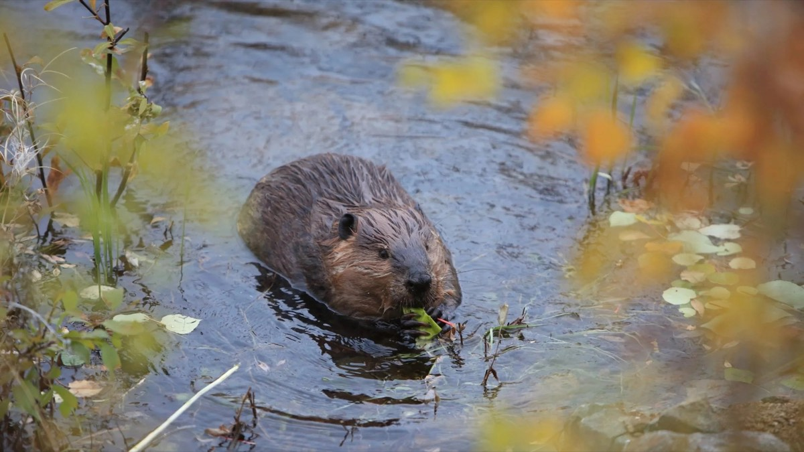

Photo : Shutterstock
En tant que communicatrice scientifique principale chez Fuse Consulting, j’ai le privilège de travailler sur une grande variété de sujets, mais les castors ont toujours fait partie de mes préférés. Mon parcours pour comprendre ces animaux remarquables a commencé il y a plus de huit ans, avec un projet de premier cycle à la University of Saskatchewan. Ce seul projet a éveillé une fascination qui m’a menée jusqu’à une maîtrise consacrée aux barrages de castor et qui a façonné une grande partie de mon travail actuel.
Récemment, j’ai réfléchi à la façon de communiquer efficacement au sujet des castors, en particulier sur l’enjeu délicat de la coexistence. Une bonne partie de ces réflexions vient de mon travail avec Project Beaver, un organisme sans but lucratif établi en Oregon qui est à l’avant-garde de la promotion des stratégies de coexistence avec le castor.
Les ingénieurs des écosystèmes que nous aimons (et que nous détestons parfois)
La plupart des personnes qui travaillent en conservation ou en gestion de l’environnement ont déjà entendu l’expression « les castors sont des ingénieurs des écosystèmes ». Elle est devenue l’entrée en matière classique de pratiquement tous les articles de recherche sur le castor, et pour cause. Cette capacité d’ingénierie est à l’origine d’une impressionnante série de bienfaits : rétention de l’eau, amélioration de la qualité de l’eau, stockage du carbone, biodiversité accrue, résilience aux feux de forêt, et plus encore. Mais c’est aussi cette capacité d’ingénierie qui est au cœur des conflits entre les humains et les castors. Les castors comme les humains préfèrent les terrains au bord de l’eau, et les uns comme les autres aiment modifier leur environnement selon leurs besoins. Malheureusement, nous avons tendance à avoir des idées différentes sur ce à quoi ces modifications devraient ressembler. Infrastructures endommagées, champs inondés et arbres abattus ont poussé bien des gens exaspérés à chercher des moyens d’éliminer les castors.
La voie de la coexistence repose sur des solutions pratiques
À mesure que nous en apprenons davantage sur les castors, les attitudes évoluent. Grâce à la découverte et à la communication des nombreux bienfaits des milieux humides créés par les castors, ceux-ci sont de plus en plus considérés comme des gardiens du territoire plutôt que comme des animaux nuisibles.
Ce changement d’attitude s’accompagne d’une évolution des techniques de gestion du castor. La gestion traditionnelle mise sur le piégeage, l’élimination, la destruction des barrages à l’aide de machinerie et l’assèchement des étangs. Les nouvelles solutions visent plutôt à favoriser diverses formes de coexistence, notamment :
l’installation de régulateurs de niveau d’eau (des tuyaux de drainage spécialisés installés dans les barrages de castor) pour contrôler le niveau de l’eau des étangs,
l’installation de dispositifs de protection des ponceaux pour éviter que les ponceaux ne soient obstrués, et
l’enveloppement des arbres dans un grillage métallique pour empêcher les castors de les abattre.
Le public, les universitaires et les praticiens de la restauration (surtout ceux qui cherchent à restaurer des cours d’eau dégradés ou à reconnecter des plaines inondables) sont généralement plus ouverts à ces techniques de gestion de rechange qui favorisent la coexistence. À l’inverse, les propriétaires fonciers, les villes, les municipalités, les agriculteurs et les éleveurs — surtout ceux qui subissent directement des dommages aux infrastructures et d’autres conflits exaspérants — ont davantage tendance à s’en tenir au piégeage et à l’élimination traditionnels des castors.
Quand on a longuement étudié les castors, il est facile de devenir un ardent défenseur de l’espèce et de se concentrer sur la sensibilisation du public à ses bienfaits. Avec le temps, j’ai appris que mettre l’accent sur les qualités du castor ne trouve pas d’écho chez les agriculteurs aux prises avec des cultures inondées, les municipalités confrontées à des ponceaux endommagés ou les gestionnaires de parcs urbains qui voient disparaître du jour au lendemain les arbres qu’ils ont soigneusement cultivés. Aujourd’hui, ma façon de parler des castors change selon mon interlocuteur. Une approche axée sur les bienfaits peut bien fonctionner auprès du public et des universitaires, mais elle ne suffit pas auprès des groupes les plus importants pour favoriser la coexistence : les personnes directement touchées par les dommages causés par l’ingénierie des castors.
Passer du conflit à la coexistence consiste à aider un public exaspéré à trouver des façons pratiques de partager le territoire, plutôt qu’à le convaincre d’aimer les castors.
N’ayez pas peur (FEAR) d’un public exaspéré
Au fil de mon travail, j’ai constaté que quatre stratégies clés aident à rejoindre les publics exaspérés.
Favoriser les solutions pratiques
Engager les gens pour susciter l’appropriation locale
Adapter le message à chaque public
Reconnaître les conflits légitimes
Ces stratégies aident à établir la confiance et à bâtir de véritables partenariats avec les personnes qui vivent directement le conflit. L’essentiel est de reconnaître les frustrations que vivent les gens et de leur laisser de la place avant de leur fournir les outils pour régler leurs problèmes de coexistence. Assurez-vous que votre ton rejoint les gens là où ils en sont. Ne jugez pas et ne condamnez pas l’élimination des castors ; proposez simplement des solutions de rechange pratiques.
Favoriser les solutions pratiques plutôt qu’une défense axée sur les problèmes
Quand vous parlez de solutions de coexistence, mettez l’accent sur ce que la coexistence apporte à votre public plutôt que sur ce qu’elle apporte aux castors. Par exemple :
Économies : installer un régulateur de niveau d’eau coûte moins cher que de détruire des barrages à répétition.
Gain de temps : les cages autour des arbres peuvent briser le cycle où l’on replante, puis perd de nouveau la végétation.
Stratégies de prévention : les dispositifs de protection des ponceaux empêchent les castors de les obstruer sans cesse. Une gestion proactive aide les gens à sortir des cycles exaspérants de gestion réactive.
Engager les personnes ou les communautés pour qu’elles s’approprient les solutions localement
Aidez les gens à s’aider eux-mêmes. Les gens sont plus susceptibles de persévérer dans l’entretien, ou face aux problèmes liés à la coexistence, s’ils sont engagés dès le départ. Une grande partie du matériel que j’ai aidé à créer prend la forme de guides aux instructions claires, qui permettent à quiconque de prendre l’initiative et de mettre en place des solutions de coexistence.
Adapter le message à chaque public, de façon ciblée et concise
Connaissez votre public et ce qui compte pour lui. Insistez sur la rétention de l’eau en période de sécheresse quand vous vous adressez à des éleveurs, ou sur la gestion naturelle des eaux pluviales avec les municipalités. Adaptez votre message pour qu’il rejoigne davantage les préoccupations et les priorités propres à chaque groupe.
Reconnaître les conflits légitimes tout en faisant valoir les bienfaits
Il est souvent question du travail et du gagne-pain des gens, ou de paysages chargés de valeur émotionnelle. Reconnaître sans jugement le problème et les difficultés vécues est essentiel pour établir la confiance. Ne minimisez pas et n’écartez pas les défis réels auxquels ils font face.
Au-delà des castors
Les castors ne sont pas la seule espèce « très conflictuelle » avec laquelle nous apprenons à vivre. Ces stratégies de communication peuvent s’appliquer à d’autres enjeux de coexistence. Le principe fondamental reste le même : pour communiquer efficacement avec des parties prenantes exaspérées, il faut les rejoindre là où elles en sont, reconnaître leurs préoccupations légitimes et proposer des solutions pratiques qui servent leurs intérêts.